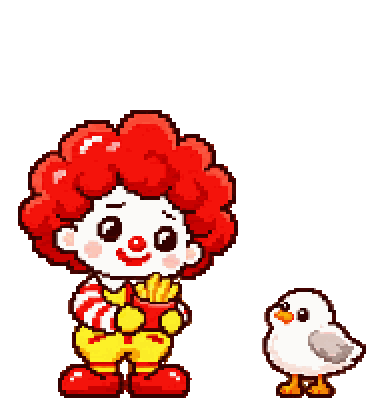

非官方交互演示 · 对话未接 AI / 实时查询 · 已使用接口商品原图
麦麦食堂
点餐场景示意
到店自取
取餐门店待选择
可以直接告诉麦麦想在哪儿取餐
今天，吃点开心的。
麦麦在右下角。
点点它，就能开始聊。
餐品一览
历史餐单 · 商品原图
这里是未来点餐页面的背景示意。
配餐、优惠和查门店，都可以直接和麦麦聊。
▣
我的餐单
还没选，慢慢聊
尚未下单
麦麦
我在，想吃什么？
−
还没选门店 · 到店自取
演示对话 · 历史报价 · 商品原图采集于 10 月 25 日
麦麦正在想一想
停止
30 元吃什么
有什么优惠
找家门店
发消息给麦麦
发送
点我聊天 · 长按摸摸
有新回复

麦麦